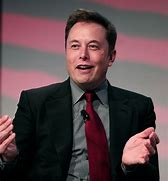

Richest Person in 2022.
Elon Musk
Born : Elon Reeve Musk June 28, 1971 (age 51) Pretoria, Transvaal, South Africa
Title : Founder, CEO, and chief engineer of SpaceX CEO and product architect of Tesla, Inc. Founder of the Boring Company and X.com (now part of PayPal) Co-founder of Neuralink, OpenAI, and Zip2 President of the Musk Foundation CEO of Twitter, Inc.
Awards : List of honors and awards
Signature
Elon Musk

How Elon Musk Become No. 1?
Elon Reeve Musk FRS (/ˈiːlɒn/ EE-lon; born June 28, 1971) is a business magnate and investor. He is the founder, CEO, and chief engineer of SpaceX; angel investor, CEO and product architect of Tesla, Inc.; founder of the Boring Company; co-founder of Neuralink and OpenAI; president of the Musk Foundation; and owner and CEO of Twitter, Inc. With an estimated net worth of around $174 billion as of November 10, 2022,[4] Musk is the wealthiest person in the world according to the Bloomberg Billionaires Index and Forbes's real-time billionaires list.[5][6] Musk was born and grew up in Pretoria, South Africa. He attended the University of Pretoria before moving to Canada at age 17, acquiring citizenship through his Canadian-born mother. Two years later, he matriculated at Queen's University and transferred to the University of Pennsylvania, where he received bachelor's degrees in economics and physics. He moved to California in 1995 to attend Stanford University but decided to instead pursue a business career, co-founding the web software company Zip2 with his brother, Kimbal. The startup was acquired by Compaq for $307 million in 1999. The same year, Musk co-founded the online bank X.com, which merged with Confinity in 2000 to form PayPal. eBay bought PayPal in 2002 for $1.5 billion. In 2002, Musk founded SpaceX, an aerospace manufacturer and space transport services company, and is its CEO and chief engineer. In 2004, he was an early investor in the electric vehicle manufacturer Tesla Motors, Inc. (now Tesla, Inc.). He became its chairman and product architect, eventually assuming the position of CEO in 2008. In 2006, he helped create SolarCity, a solar energy company that was later acquired by Tesla and became Tesla Energy. In 2015, he co-founded OpenAI, a nonprofit research company promoting friendly artificial intelligence. In 2016, he co-founded Neuralink, a neurotechnology company focused on developing brain–computer interfaces, and he founded the Boring Company, a tunnel construction company. In 2022, Musk purchased the social media platform Twitter for $44 billion. He has proposed a hyperloop high-speed vactrain transportation system and is the president of the Musk Foundation, which donates to scientific research and education. Musk has promoted contentious perspectives regarding politics and technology, especially on Twitter. As such, he has developed polarizing cults of personality and hate. He has also been criticized for making unscientific and misleading statements, such as spreading COVID-19 misinformation, tweeting that he had secured funding for a private takeover of Tesla, and having a legal dispute with a British caver who had advised him about the Tham Luang cave rescue. The Tesla private takeover tweet has caused the U.S. Securities and Exchange Commission to temporarily stepped down his Tesla chairmanship.